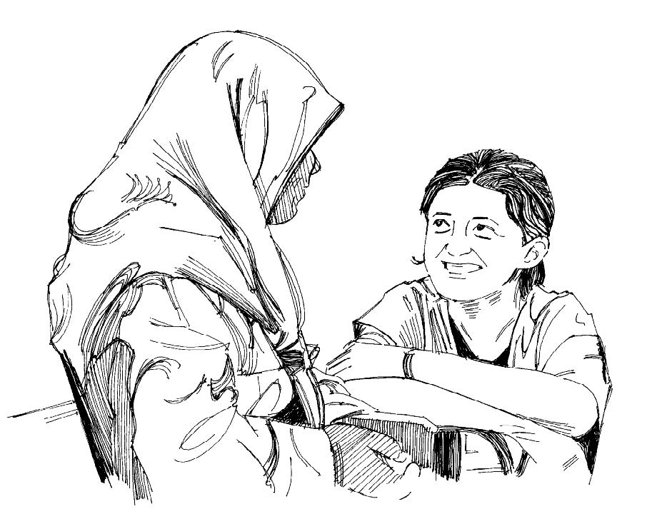
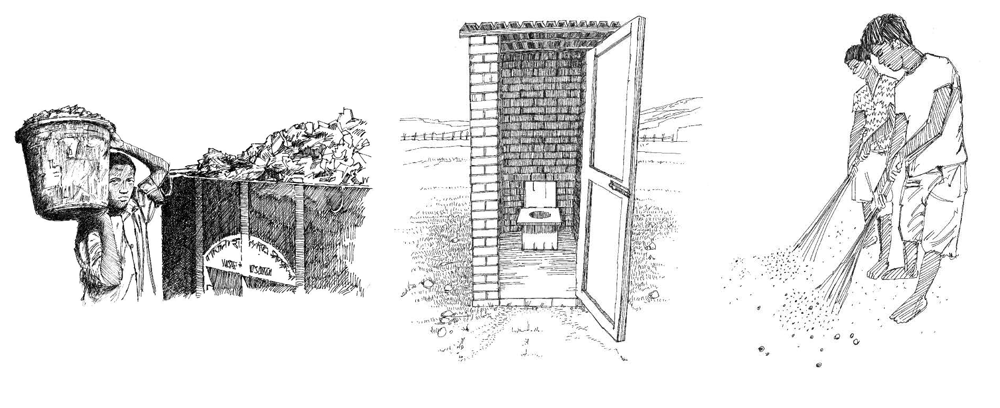

Aperçu
- Un bon assainissement est essentiel pour éviter la propagation de nombreuses épidémies, notamment la diarrhée et le choléra.
- En tant que volontaires, vous pouvez inciter les membres de la communauté à améliorer l’assainissement en utilisant des latrines, en éliminant les déchets et en asséchant les plans d’eau stagnante.
Ce que vous devez savoir
Voici les principales initiatives de prévention des maladies grâce à l’assainissement
- Éliminer sans risque les excréments (en construisant des latrines).
- Éliminer sans risque les ordures et déchets solides.
- Enterrer les dépouilles mortelles et éliminer les carcasses d’animaux de manière sûre.
- Lutter contre les vecteurs des maladies et protéger la population de ceux-ci.
- Incinérer les déchets médicaux.
- Drainer ou faire s’écouler les eaux usées et stagnantes (les campements devraient être construits en tenant compte de ce paramètre).
- Promouvoir l’hygiène et enseigner à la population comment

Enseignez à votre communauté les bonnes pratiques en matière d’assainissement
Ce que vous pouvez faire
- Favoriser la construction et l’utilisation de latrines.
- Encourager la communauté à brûler ou à enterrer les déchets.
- Mobiliser la communauté pour qu’elle assèche les plans d’eau stagnante, où des moustiques

Éliminer les déchets de manière hygiénique.Construire des latrines et les utiliser correctement. Mener des campagnes de nettoyage dans la communauté.